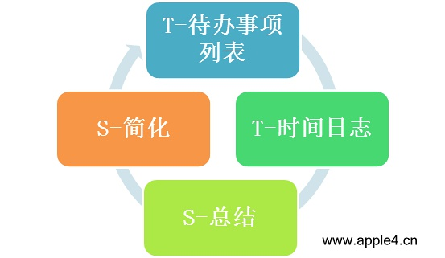

TTSS时间管理
大多数受害者家庭都是处在无序的状态下，必要的学习一些建序的方法是很有必要的，我这里推荐的是一种简易化的时间管理方法，方法如下：

- T——To do lists
- T——Time log
- S——Summary
- S——Simplify
TTSS时间管理
- To do lists(待办事项列表) 把你明天要做的事情写到笔记本上。安排他们的优先顺序。具有好的可执行性和灵活性。
- Time log(时间日志) 监督反馈系统，只需要简简单单记录时间—事件本身就好。
- Summary(总结) 当你坚持记录一周的时间日志之后，就到了总结阶段了。答案是在看历史书。找出毛病,提高自己。
- Simplify（简化） 当我们做完总结以后，我们可以拿出一张白纸开始做简化工作。简化是对总结工作的升华，是通过自己的反思，为下一步计划作出策略方针。